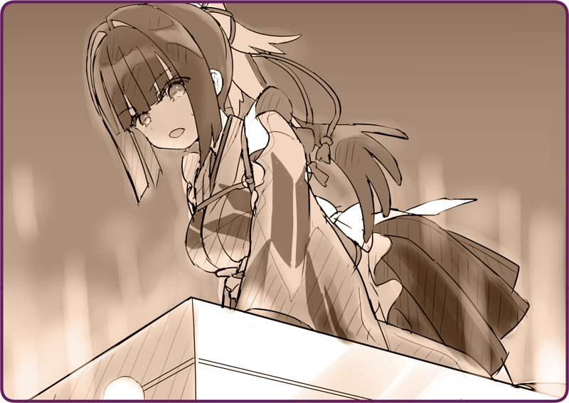

鴉羽は踵を返すと、農耕用機械人形の元へと戻った。
ローサ「ま、待って……」
手を貸すと、小さな体を引っ張り上げる。
一刻も早くここから逃げなければ。
ローサ「……だめ」
ローサ「エンジン止まってる」
確かに、煙突からの廃棄が止まっている。
まさかこんなときに論理機関が故障するなんて……
不気味な羽音が、徐々に近づいてきているのが分かる。
鴉羽たちを補足したのだ。もしあれが“見られてはいけないもの”だとするならば……。
従軍中ならば、あんな偵察人形ごときに遅れを取ることはなかった。
しかし、いまは
自律人形である鴉羽には武器と呼べる存在がない。
強いて言うならばこの農耕用機械人形だが、そもそも鴉羽は指揮能力を失ってしまっている……。
でも、やらなければいけない。
ローサ「でも……」
そっと躯体に手を触れさせる。
目をつぶって、視覚情報を遮断する。そして、意識を集中させる。
論理機関同士を共鳴させる。人形同士の意識を一体化させるのだ。

ちりっと胸が灼けるような感覚があった。
ローサ「すごい汗だよ！」
義体温度が上昇している。とめどなく冷却液が噴出するのが分かる。
かすかに共鳴が返ってくるのが分かる。
音を捕まえて、そして増幅させる。あたしの意識を送り込む……。
ぼしゅ、と詰まったような音とともに、黒煙が吹き出す。
体の下で、唸るような駆動音が響いている。
全身が冷却液でべったりだった。
それでも、指揮できた。確かに論理機関に信号を送れたのだ。
ローサ「お姉ちゃん、来てる……！」
羽をこすり合わせる音は、すぐ背後まで迫っていた。
雪煙を噴き上げると、最大速度で加速する。操作できる――。
ローサ「きゃああああ！！！」
風を切って、躯体を走らせる。
気づけば、そこは凍りついた湖の上だった。
愚鈍な印象だが、すべてを速度に割り当てれば下手な自動車ぐらいの速度は出る。
ローサ「だめ、追いかけてきてる……！」
ローサは必死に鴉羽にしがみついている。
ちらりと背後を伺うと、まるで虫を思わせる義体がぴったりと後を追ってきていた。
きらりと銃口が光っているのが分かる。
ローサ「わあああっ！？」
逃げ切れないと判断して、躯体を１８０度旋回させる。
いちかばちかだが、やってみるしかない。
ローサ「突っ込んでくるよ！？」
瞳が真っ赤に発光するのが分かる。
機械人形に指令を出すと、前足を浮かせるようにして大きく広げた。
強い衝撃。避けきれなかった
機械人形同士が正面衝突する。
そのまま、
機械人形の全体重を載せて、氷面に前脚を突き立てた。
ぴし、とひび割れる音が、冷たい空に響いた。
みるみるうちに湖に亀裂が広がっていく。
ローサ「え、え？」
その手を取って
機械人形の上から降りる。
氷面に降り立つと、無我夢中でその場から駆け出した。
一度崩れ始めると、崩落はあっという間だった。
湖岸へと必死に逃げていく鴉羽とローサ。
その背後で、大きな水しぶきが上がる。
二体の
機械人形は、あっけなく氷とともに湖の底へと沈んでいった。

 「早く乗って！」
「早く乗って！」